Detectando Exoplanetas II
Tres métodos más para cazar planetas: microlensing (la gravedad como lente), imagen directa (ver al planeta de verdad, tapando a la estrella) y tránsitos (la pequeña sombra que el planeta proyecta sobre la luz de su estrella). Cada uno «ve» un tipo de planeta distinto.
La clase anterior detectamos planetas indirectamente, mirando cómo perturban a su estrella (velocidad radial, timing, astrometría). Esta clase agrega los tres métodos que faltan, y dos de ellos cambian de estrategia: el microlensing usa la gravedad de un sistema como una lente que amplifica la luz de una estrella lejana; la imagen directa intenta lo más difícil de todo —ver el fotón que sale del planeta, tapando la luz de la estrella con un coronógrafo—; y los tránsitos, el método que hoy domina el conteo de planetas, miden la diminuta caída de brillo cuando el planeta cruza por delante de su estrella. La idea transversal sigue siendo la misma: todo método impone un sesgo, y entenderlo es tan importante como la detección misma.
Panorama: dónde estamos y qué falta
El módulo II es «cómo sabemos lo que sabemos» de los exoplanetas.
El profesor enmarca las dos primeras clases del módulo como un recorrido por los métodos de detección más importantes —importante = mayor cantidad de planetas detectados—. Las clases siguientes usarán esos métodos para preguntar qué sabemos de los sistemas. La Clase 1 cubrió timing, astrometría y velocidad radial; esta cubre microlensing, imágenes directas y tránsitos.

Todo arranca en el problema de dos cuerpos, con solución exacta: una elipse descrita por 6 parámetros keplerianos ( + anomalía). La 3.ª ley de Kepler, , es la «balanza cósmica»: si medimos período y separación, pesamos el sistema. Estos métodos nuevos siguen apoyándose en esa misma geometría orbital.
Microlensing: la gravedad como lente
Desarmemos la palabra: «micro» + «lens». Un lente es cualquier cosa que doble la luz.
Una de las predicciones de la relatividad general de Einstein es que donde hay masa (= energía) la geometría del espacio-tiempo se curva. Esa curvatura desvía la luz: la masa actúa como un lente gravitacional. Nosotros curvamos el espacio-tiempo de forma ínfima; un planeta más, una estrella mucho más, una galaxia muchísimo más.
Cerca de una masa el tiempo transcurre más lento. Es real y cotidiano: los relojes en la superficie de la Tierra andan distinto a los de los satélites GPS, y hay que corregir por ello (efecto gravitatorio y cinemático combinados) o el GPS acumularía errores de kilómetros. La verificación clásica de que la luz se dobla se hizo observando estrellas junto al Sol durante un eclipse y comparando su posición con la de seis meses después: aparecen corridas porque el espacio está curvado.
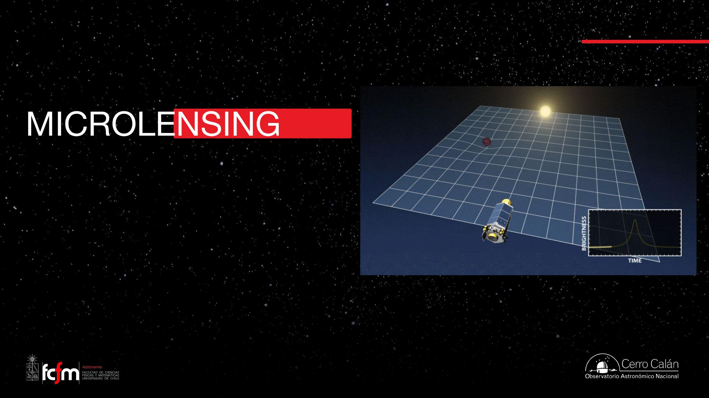
Cuando el lente se alinea casi perfectamente con la fuente, recibimos su luz por dos (o más) caminos a la vez: vemos varias imágenes de la misma estrella. La separación angular entre esas imágenes suele ser imposible de resolver, pero el efecto neto sí se nota: recibimos más flujo del que nos correspondería. Por eso lo que se grafica es la cantidad de luz en función del tiempo.
«Lente gravitacional» a secas se reserva para el efecto de cúmulos de galaxias, donde la enorme masa (incluida materia oscura) curva la luz de quásares de fondo y produce esos arcos rojizos famosos (rojos por el alto redshift: están muy lejos). Cuando el lente es una sola estrella o estrella+planeta, hablamos de microlensing: misma física, escala mucho menor.
Radio de Einstein y curva de amplificación
Dos números gobiernan el evento: cuánto se amplifica y cuánto dura.
La escala angular natural del problema es el radio de Einstein , que depende de la masa del lente y de la geometría de distancias observador–lente–fuente:
La amplificación depende de un parámetro adimensional : la separación proyectada fuente–lente en unidades de (qué tan «de lleno» es la alineación). Cuanto más cerca de la alineación perfecta (), más se amplifica:
Como el lente (o la fuente) se mueve, cambia con el tiempo y barre un mínimo en el momento de máxima alineación. La escala temporal es el tiempo de Einstein (cuánto dura la amplificación):
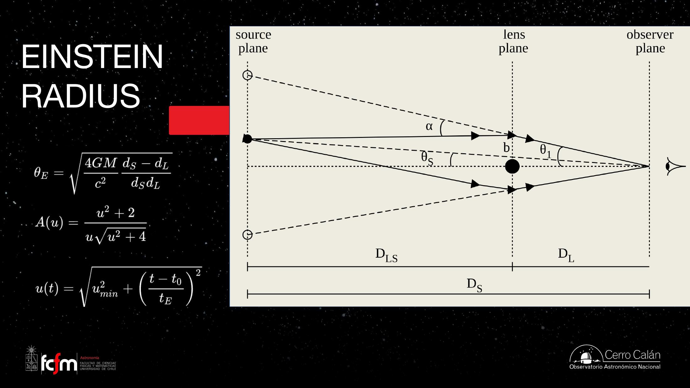
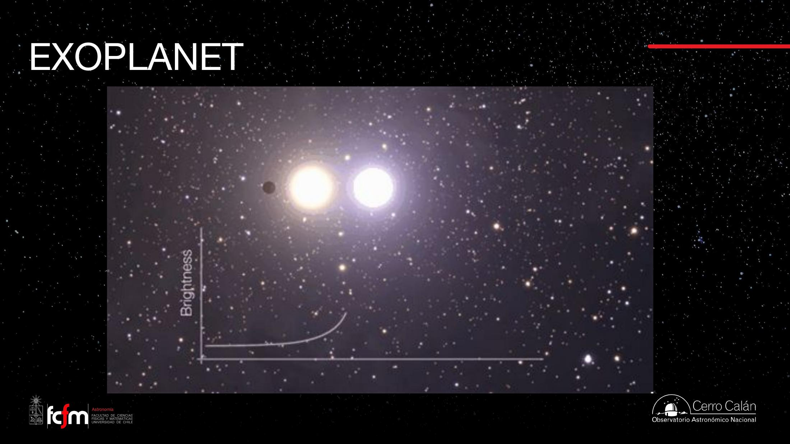
Cáusticas y planetas: OGLE-2006-BLG-109
Cuando el lente tiene dos masas, la amplificación se vuelve rica y diagnóstica.
Si el lente es doble (estrella + planeta, o estrella + estrella), los efectos de ambas masas se suman y producen una geometría peculiar: las cáusticas, líneas matemáticas donde la amplificación se vuelve enorme. Cuando la fuente cruza una cáustica (sigue una «cuerda» a través del diagrama), el brillo da picos muy agudos y muy informativos —pero breves—.
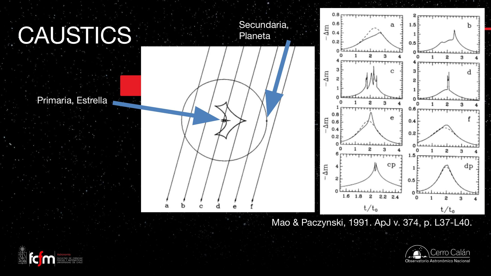
Modelar un evento de microlensing binario es un problema inverso mal condicionado: muchas configuraciones (posiciones, razón de masas, trayectoria) pueden producir curvas parecidas. El trabajo es un fit sobre un espacio de parámetros amplio y multimodal —el mismo tipo de paisaje con muchos mínimos locales que aparece al ajustar modelos complejos a datos ruidosos—. Por eso un solo evento puede tomar meses de análisis.
El caso emblemático es OGLE-2006-BLG-109 (Gaudi et al. 2008): un evento que reveló dos planetas gigantes alrededor de una estrella de ~0,5 a ~1,5 kpc. Resultó un análogo a escala de Júpiter + Saturno: masas de ~0,71 y ~0,27 a ~2,3 y ~4,6 UA. Detectar planetas a esas separaciones con otros métodos es dificilísimo; el microlensing es de hecho más eficiente cuando los planetas están bien separados de su estrella.
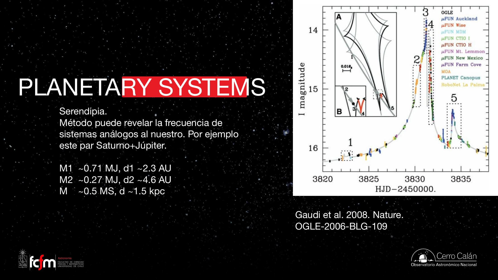
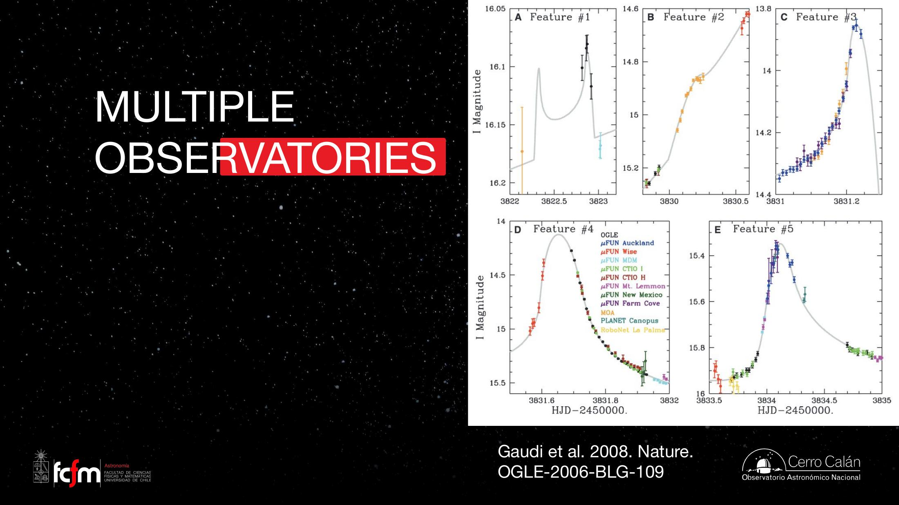
El primero en detectar el evento fue OGLE, un consorcio polaco con telescopio en Las Campanas (Chile). Detectado el alza, se alertó a otros telescopios para que tomaran la posta en otras longitudes geográficas y dieran cobertura horaria completa: el evento se vuelve una «prioridad mundial».
Serendipia: qué muestrea el microlensing
No se repite jamás, pero por eso mismo es una muestra imparcial.
La gran limitación del microlensing es que es irrepetible: la alineación fuente–lente ocurre una vez y no vuelve (las estrellas tienen movimiento propio, medible hoy con Gaia). No se puede «volver a pedir tiempo» para estudiar ese planeta; solo obtenemos su masa y su distancia a la estrella, no su atmósfera ni su órbita detallada.
Como la alineación es serendipia, el microlensing entrega una muestra imparcial de planetas. El profesor lo compara con sortear por número de RUT en vez de por «quién compra el loto»: no estás eligiendo, así que lo que sale refleja lo típico. Por eso, aunque cada sistema individual no se pueda re-observar, el conjunto de eventos dice cuáles son los planetas más comunes y a qué distancias orbitan —y es consistente con lo que muestran los tránsitos—.

Es la diferencia entre un muestreo auto-seleccionado (encuesta a quien responde voluntariamente) y uno aleatorio. La velocidad radial y los tránsitos favorecen planetas grandes y cercanos (sesgo fuerte); el microlensing, al ser ciego a las propiedades del sistema, da una estimación mucho menos sesgada de la distribución real de planetas en la Galaxia.
Imagen directa: el problema del contraste
Lo que la gente imagina cuando oye «se detectó un exoplaneta»: verlo.
La imagen directa capta la luz que realmente proviene del planeta. Idealmente uno ve la estrella y sus planetas, y dejando pasar el tiempo los ve orbitar. El planeta no brilla con luz propia: refleja la de su estrella (y emite algo en infrarrojo por su propia temperatura). El flujo del planeta, relativo al de la estrella, es:
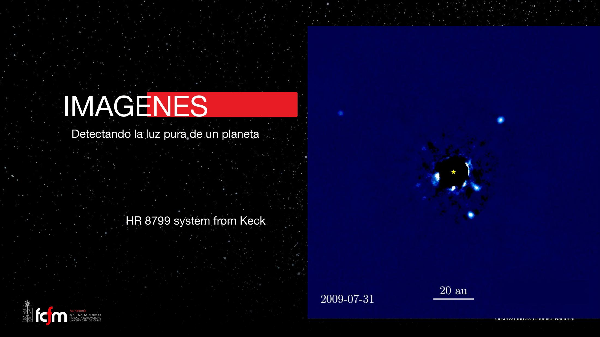
La analogía de la NASA (sección para niños) es perfecta: ver un planeta junto a su estrella es como ver una luciérnaga al lado de un faro. La razón de brillos Júpiter/Sol es (¡un dólar frente a mil millones!). La señal del planeta se ahoga en el «chorro de luz» de la estrella. Si pudiéramos apagar el faro, veríamos la luciérnaga con esfuerzo: ése es exactamente el trabajo del coronógrafo.
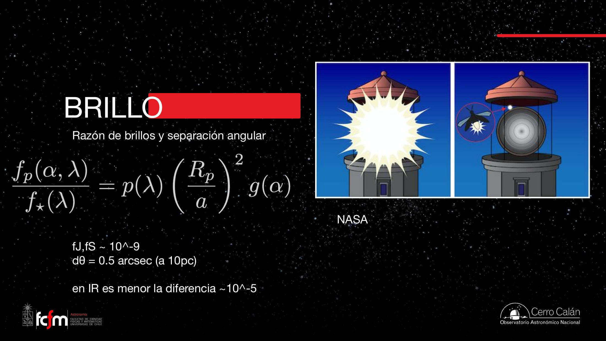
Coronógrafos, óptica y sus límites
Borrar la estrella es óptica fina; cada elemento que agregas, cuesta luz.
Un coronógrafo es un elemento óptico que anula la luz del objeto central y deja ver lo que está alrededor. El profesor lo compara con un viejo CD: un disco con ranuras concéntricas que, según su geometría, hacen interferir la luz del centro hasta cancelarla. Los hay de máscara, de Lyot y de vórtice (a veces tallados en diamante): una máscara de ~1 cm con surcos de ~0,3 mm, donde la milésima parte de esos surcos es comparable a la longitud de onda de la luz.
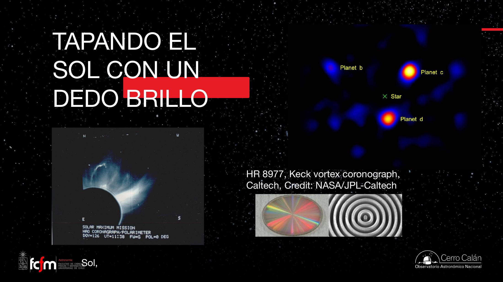
El precio: borrar la estrella requiere mucha óptica. Cada lente o espejo por el que «salta» la luz pierde eficiencia. Por eso hay que apuntar a estrellas brillantes y cercanas (dentro de ~1 pc para separaciones > medio segundo de arco), y la mayoría de las estrellas son enanas rojas débiles. Además, la atmósfera limita la resolución: lo típico es (0,8–1,2''), y solo en las mejores noches de Las Campanas se llega a ~0,3''. La óptica adaptativa ayuda, pero el número de blancos posibles es limitado.
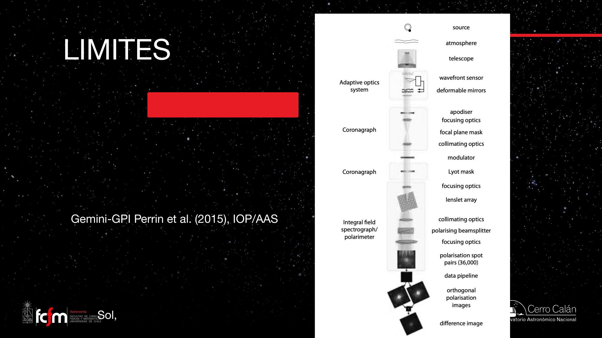
El método tiene una virtud única: al repetir imágenes en años distintos, uno ve moverse al planeta y mide su órbita directamente. Así se hizo con Beta Pictoris b, observable sobre todo en infrarrojo.
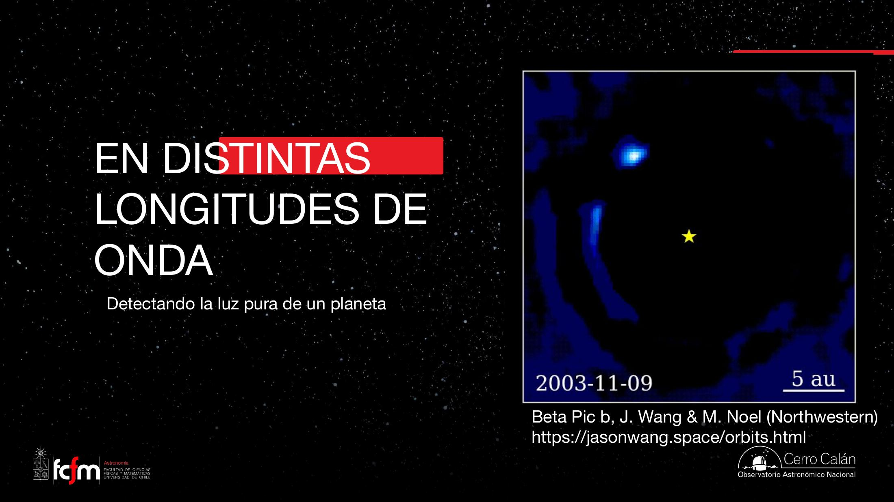
El infrarrojo facilita la detección, pero también facilita equivocarse. El caso de Fomalhaut b es famoso: durante años toda la comunidad (el profesor incluido) lo trató como planeta, hasta que las observaciones mostraron que se difuminaba en ~10 años: no era un planeta, sino una nube de polvo en expansión (probable colisión). Distinguir luz reflejada del planeta de luz dispersada por polvo es genuinamente difícil.
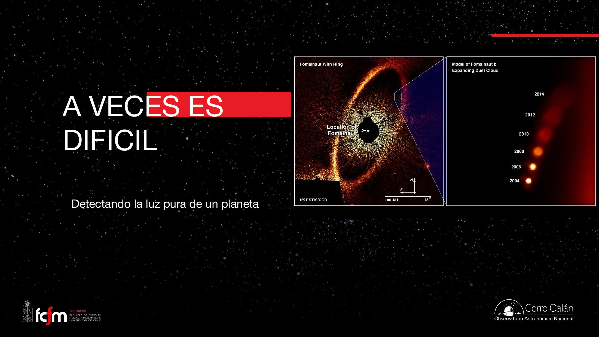
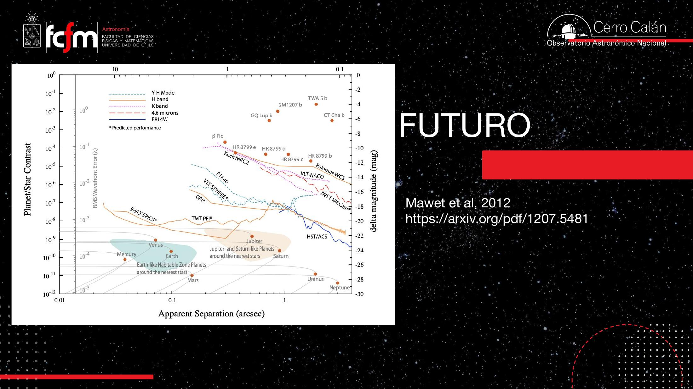
Tránsitos: geometría, profundidad y probabilidad
Simple y poderoso: la pequeña sombra del planeta sobre la luz de la estrella.
El método de los tránsitos es el que «le ganó» a la velocidad radial en número de detecciones. La idea es sencilla: si el sistema está casi de canto (visto de perfil), el planeta pasa por delante de la estrella y bloquea una parte de su luz. No resolvemos la estrella como un disco mordido; simplemente recibimos menos flujo. La caída relativa es la razón de áreas:
Pero hace falta una alineación muy especial: estar justo de canto. Hay una tolerancia (el planeta puede cruzar por arriba o por abajo del centro), y la probabilidad geométrica de que un sistema orientado al azar muestre tránsito es del orden del tamaño de la estrella sobre el de la órbita:
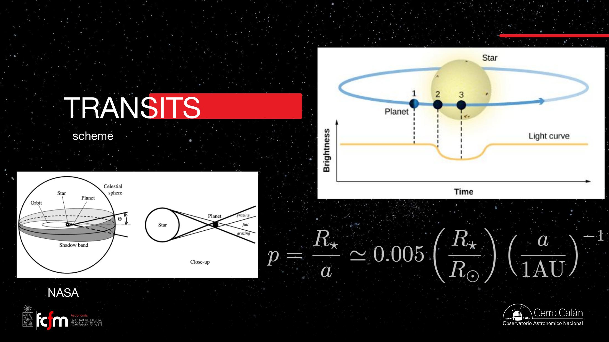
El primer tránsito y el «folding»
HD 209458 b: el primer planeta visto transitar, y la técnica para sumar señal.
El primer exoplaneta observado en tránsito fue HD 209458 b (David Charbonneau et al., 2000), con la modesta cámara schmidt STARE. En un par de semanas se vieron dos tránsitos. La curva de un solo tránsito dura unas horas; para mejorarla se usa el folding («doblar la ropa»): se supone un período, se alinean los tránsitos sucesivos uno sobre otro y se suman, promediando el ruido y revelando una curva limpia.
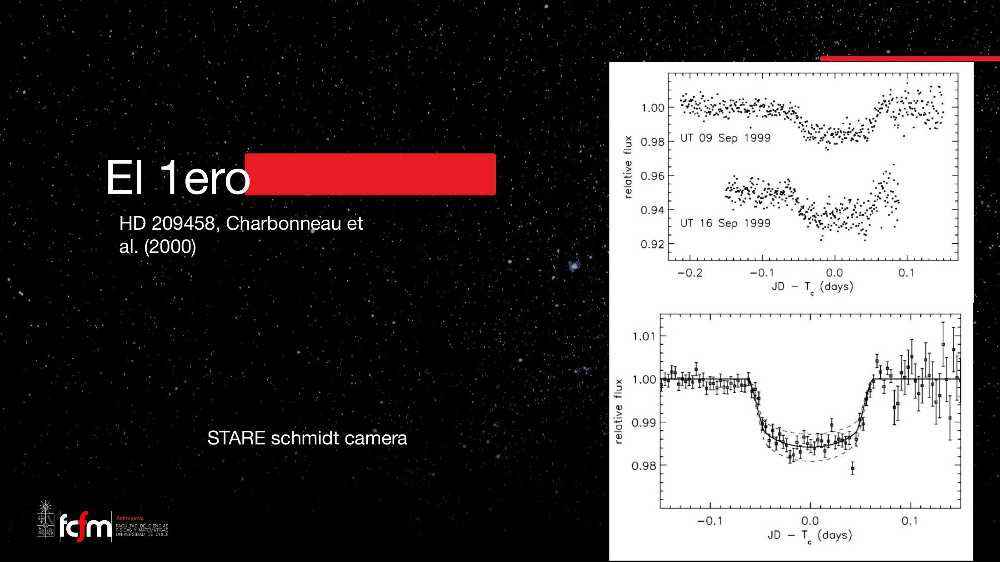
Observando desde la Tierra solo se ve de noche. Si uno «pilla» el tránsito en mitad de la noche, es probable que el período sea cercano a un número entero de días (uno vuelve a mirar la misma estrella a la misma hora). Este sesgo —junto con la preferencia por planetas de período corto y cercanos— es propio del método visto desde tierra; los telescopios espaciales lo eliminan.
El folding es promediado coherente: al apilar tránsitos en fase, la señal (la caída) se suma constructivamente mientras el ruido (blanco) se promedia, mejorando la relación señal-ruido como . Es la misma idea que el boxcar averaging o la detección sincrónica: si conoces la periodicidad, puedes sacar una señal de debajo del ruido.
Modelando el tránsito: duración y limb darkening
La forma de la curva guarda más información que la sola profundidad.
Si la estrella fuera un disco uniformemente brillante, el tránsito sería casi un trapecio definido por cuatro tiempos de contacto (): primer contacto (el planeta toca el borde), segundo (entra del todo), tercero (empieza a salir) y cuarto (último contacto). De ahí salen la duración total y la duración «plana», que dependen de la geometría (, el parámetro de impacto y la inclinación):
Esos nombres de contactos no son nuevos: vienen de los tránsitos de Mercurio frente al Sol. Midiendo cómo se corrían esos tiempos a lo largo de los años se detectó la precesión anómala del perihelio de Mercurio, una de las primeras confirmaciones de la relatividad general.
La estrella no es uniforme: el borde se ve menos brillante que el centro. Es el oscurecimiento de borde (limb darkening), que redondea las esquinas del tránsito y se modela con coeficientes :
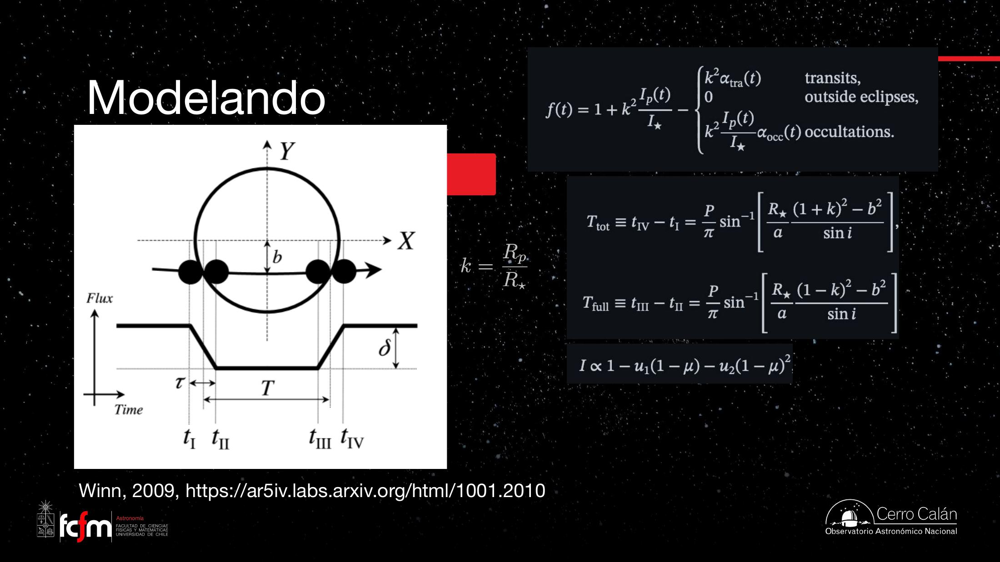
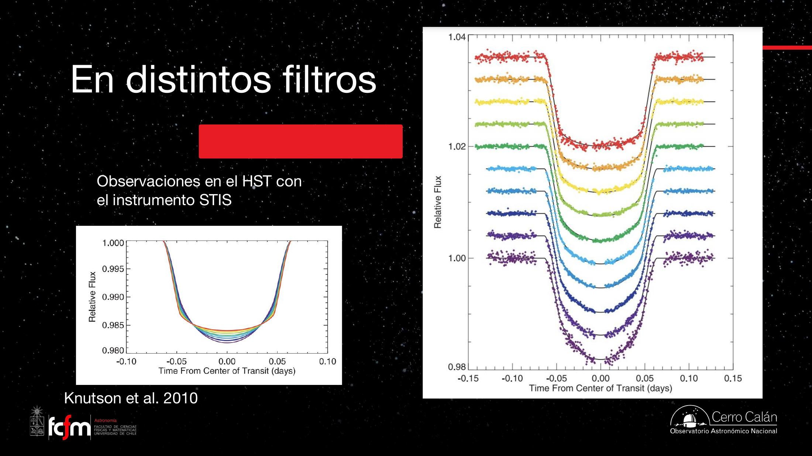
Más allá del tránsito: secundario, manchas, Rossiter-McLaughlin
El tránsito principal es solo el comienzo de lo que se puede medir.
Cuando el planeta pasa por detrás de la estrella ocurre el eclipse secundario (u ocultación): desaparece la luz del lado iluminado del planeta. Comparando «estrella + planeta» con «estrella sola» se mide directamente el brillo del planeta. Es más difícil que el primario y se hace mejor en infrarrojo.
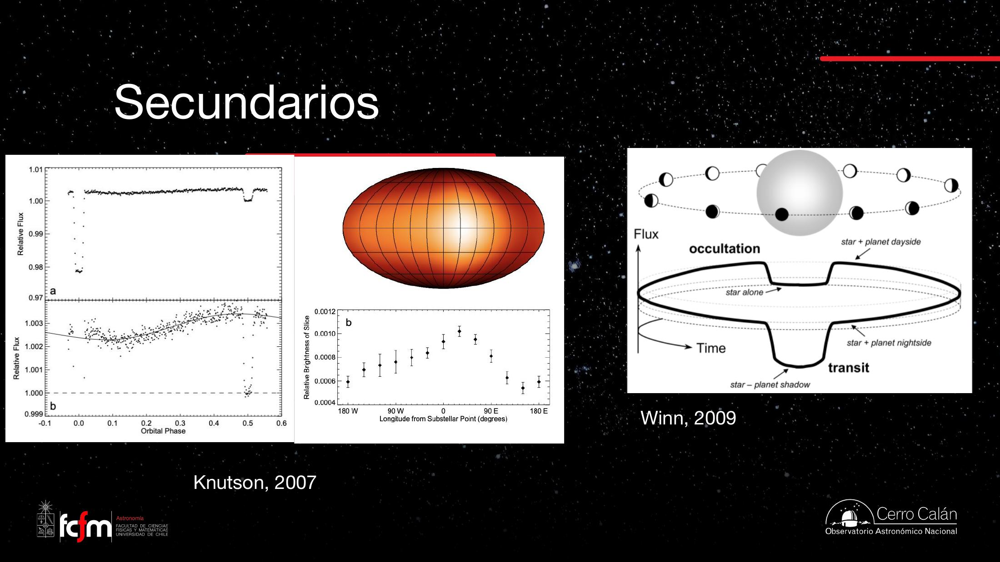
Ese mapa térmico se logró con Spitzer (infrarrojo), cuyos detectores tienen «memoria»: tras mirar algo brillante, el voltaje queda contaminado (el mismo artefacto de halo «tipo araña» de ciertas cámaras IR). Hubo que caracterizar y corregir ese efecto técnico durante ~1 año antes de extraer la ciencia. Desde entonces, las observaciones de precisión con Spitzer empezaban mirando una estrella brillante un buen rato para «asentar» el detector. (El audio menciona a una astrónoma —probablemente Heather Knutson— como experta en este problema; el nombre exacto no se distingue bien en la transcripción.)
Las estrellas de baja masa suelen estar manchadas (como las manchas solares, pero más). Cuando el planeta tapa una mancha (zona más fría y menos brillante), bloquea menos luz y la curva se deforma. Siguiendo esas deformaciones tránsito a tránsito se mide la rotación de la estrella.
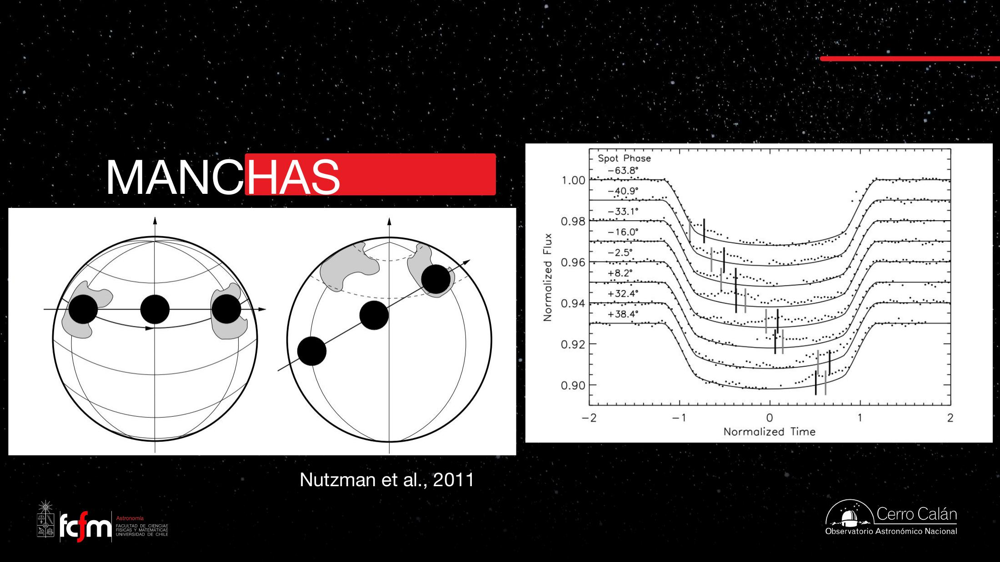
Finalmente, el efecto Rossiter-McLaughlin: una estrella rota, así que un borde se acerca (corrido al azul) y el otro se aleja (corrido al rojo). Cuando el planeta tapa sucesivamente esas mitades, distorsiona las líneas espectrales de forma característica. Esto permite medir si la órbita del planeta está alineada o desalineada con la rotación estelar —una pista sobre la historia dinámica del sistema—.

La era espacial: Kepler, TESS y sistemas múltiples
Mirar sin descanso, desde el espacio, le quitó los sesgos al método.
El que «cambió el juego» fue Kepler: un satélite que observó sin cesar una zona fija del cielo, generando curvas de luz consistentes, públicas y descargables. Al observar por años (no por noches), eliminó el sesgo hacia períodos cortos y múltiplos de un día, y permitió encontrar sistemas con múltiples planetas. Su sucesor TESS hace un barrido de casi todo el cielo enfocado en estrellas brillantes y cercanas.
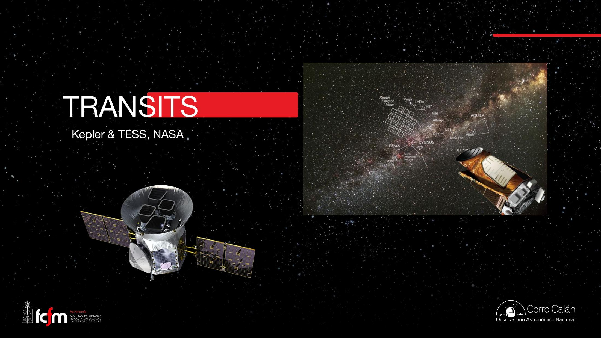
En sistemas multiplanetarios, el juego es identificar qué eclipses corresponden a qué planeta separándolos por sus períodos. El ejemplo es TRAPPIST-1, con siete planetas (curiosamente descubierto con el telescopio TRAPPIST en La Silla, Chile, no con Kepler).
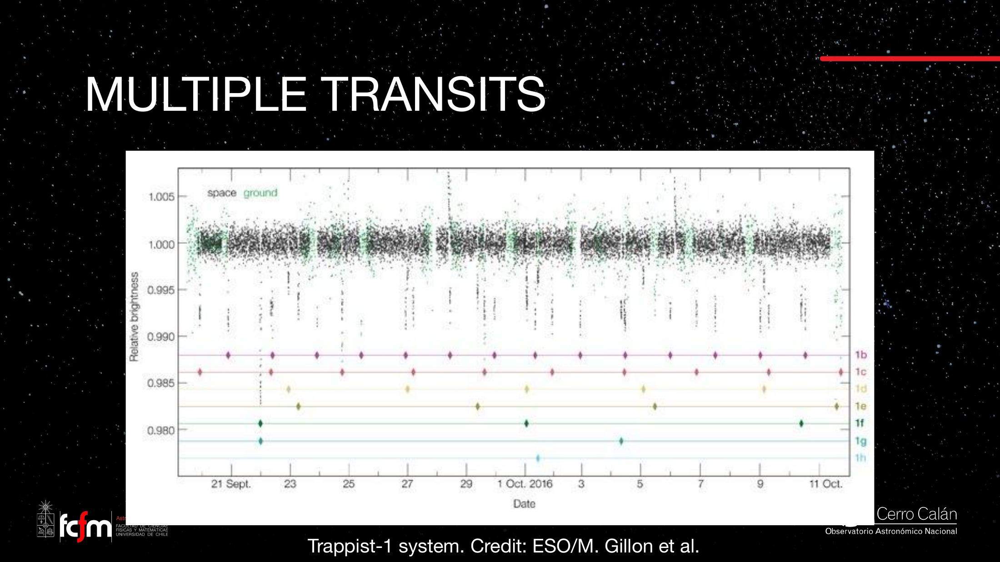
Con el tránsito: la profundidad da (tamaño del planeta, si se conoce ) y el período da, vía Kepler, la distancia a la estrella. Combinando tránsito + velocidad radial se rompe la degeneración (el tránsito fija ) y se obtiene la masa; con masa y radio, la densidad ⇒ rocoso vs gaseoso.
Mensaje central: cada método ocupa una región distinta del diagrama masa–distancia, y ninguno lo ve todo. El tránsito domina el conteo y, combinado con velocidad radial, da tamaño + masa + densidad. La próxima clase profundiza en qué aprendemos de estos sistemas: qué nos dicen la profundidad y el período, qué pasa cuando los períodos cambian (TTV), y cómo se caracterizan las atmósferas.
Conceptos clave
Tabla de repaso rápido.
| Concepto | Qué es / valor | Por qué importa |
|---|---|---|
| Microlensing | Amplificación de una fuente por la gravedad de un lente | Detecta planetas lejanos de su estrella; muestra imparcial |
| Radio de Einstein | Escala angular del evento; depende de la masa del lente | |
| Amplificación A(u) | Diverge si ; lo que se mide en el tiempo | |
| Cáusticas | Líneas de amplificación extrema en lente binario | El planeta deja un bump; clave para detectarlo |
| OGLE-2006-BLG-109 | Análogo Júpiter+Saturno (Gaudi 2008) | ~0,71 y 0,27 a ~2,3 y 4,6 UA |
| Serendipia | El evento ocurre una vez y no se repite | Irrepetible, pero da una muestra no sesgada |
| Imagen directa | Ver el fotón del planeta; contraste (óptico) | «Faro y luciérnaga»; mejor en IR () |
| Coronógrafo | Óptica que anula la luz central | Permite ver planetas; cuesta eficiencia y resolución |
| Profundidad de tránsito | Da el tamaño del planeta (Júpiter ~1%, Tierra ~84 ppm) | |
| Probabilidad geométrica | (Tierra-Sol) | 1 de cada 200 sistemas al azar transita |
| Folding | Apilar tránsitos en fase y sumar | Mejora la SNR como |
| Limb darkening | Redondea el tránsito; informa sobre la estrella | |
| Eclipse secundario | Planeta detrás de la estrella | Mide el brillo del planeta y su mapa térmico |
| Rossiter-McLaughlin | Distorsión espectral por rotación estelar | (Des)alineación órbita-rotación |
| Kepler / TESS | Fotometría espacial continua | Quita sesgos; halla sistemas múltiples |
Exámenes de práctica
10 exámenes de 5 preguntas (3 de alternativas autocorregibles + 2 de respuesta escrita).
- Examen 01Panorama y métodos
- Examen 02Microlensing: el lente
- Examen 03Einstein y amplificación
- Examen 04Cáusticas y OGLE
- Examen 05Serendipia y sesgos
- Examen 06Imagen directa: contraste
- Examen 07Coronógrafos y límites
- Examen 08Tránsitos: profundidad
- Examen 09Modelado del tránsito
- Examen 10Kepler e integrador